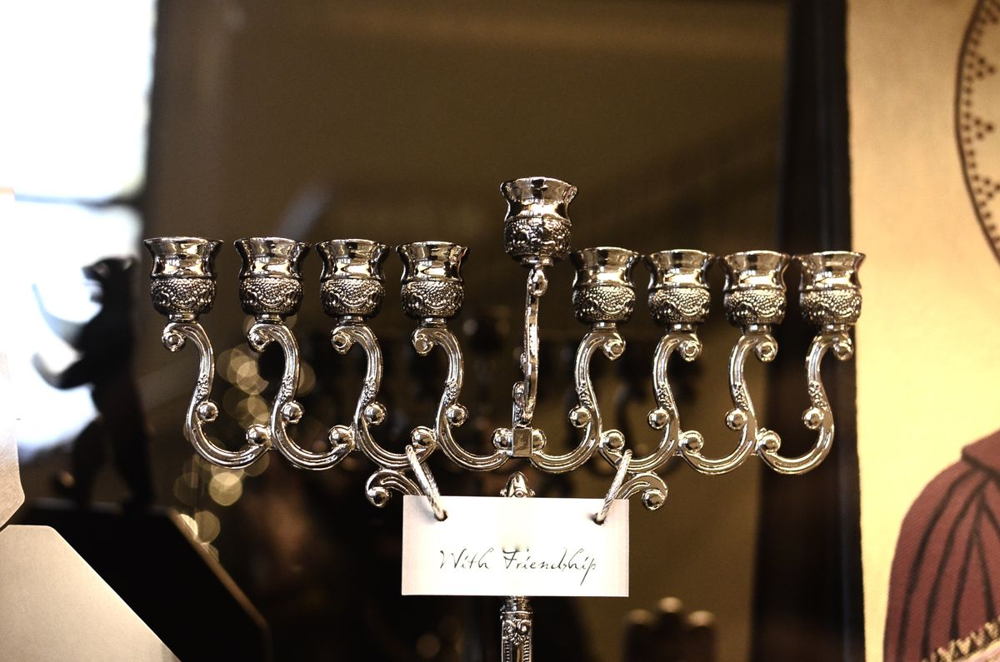

Every commission here is written as it happened: what was asked, what the bench
did, and where the piece lives now. Prices are the prices that were charged —
the same figures printed in the shelf table on the gallery page.
A standing boundary: questions of ritual law — what may be
inscribed, what a synagogue piece requires, whether a repair keeps a piece fit
for use — are referred to the client's own rabbi, always. The studio advises on
silver, cloth and time. It does not rule on law, and any maker who does both
should be asked which hat they are wearing.
A cup for a grandfather's eightieth
Family commission · Haifa · Kiddush cup · $640 · 5 weeks
The ask
Three adult children wanted one cup their father would actually drink from
every Friday — not a trophy. He has large hands and a tremor, so the cup had to
be weighted low, with a foot wide enough to set down without looking.
What the bench did
Goblet No. 2, raised heavier in the bowl than the standard pattern and
engraved inside the band with the family's names in the order they were born —
the engraving where only the drinker sees it. Delivered in five weeks, in time
for the birthday Shabbat, with a polishing cloth and the care card every piece
leaves with.
The outcome
The cup is in weekly use in Haifa. The family ordered a second, lighter cup
the following spring for the eldest daughter's own table — the best review a
bench can get is a second order from the same house.
“He holds it with both hands and it does not spill. My mother cried at the
engraving. It is the least ornamental, most used thing we own.”
— Noa Halevi, Haifa, on her father's eightieth-birthday cup
A small Jerusalem congregation restoring its ark asked for a Torah crown and
a pointer to match a set of rimonim they already owned — old silver, a different
maker's hand, and no wish to pretend otherwise.
What the bench did
The new pieces were designed to sit honestly beside the old: same height and
weight family, a plainer chasing pattern, and the studio mark stamped where a
future repairer will find it. The inscription wording went to the congregation's
rabbi before a single letter was cut — that is his call, and the bench waited
the two weeks it took without complaint.
The outcome
Both pieces were dedicated at Rosh Hashanah, ordered the previous spring —
synagogue work is ordered a season ahead or it is not ordered honestly. The
congregation's repair book now lists the studio as its silver address.
“She made new silver that does not shout next to old silver, and she waited
for our rabbi's answer on the inscription without once hurrying us. That is the
whole review.”
— Daniel Peretz, gabbai of the congregation
Twenty-four mezuzah cases for a museum shop
Museum-shop range · Mezuzah cases · wholesale terms · batches of 12
The ask
A museum shop wanted a mezuzah case that its buyers could explain in one
sentence and its customers could afford without an occasion — and it wanted the
shelf price to stay the shelf price, with no quiet second grade of stock.
What the bench did
One pattern, simplified honestly: the same sterling, the same engraved shin,
fewer hours in the chasing. Made in batches of twelve so the bench stays a
bench and not a factory. The shop takes its standard margin on the wholesale
price; the piece a customer buys in the shop is the piece described on this
site, at $310 retail.
The outcome
Two batches a year since 2023, reordered each spring before Passover. The
shop's staff card says “hand-raised in Jerusalem” because it is true, and says
nothing else, because nothing else is needed.

Studio silver on a museum-shop shelf, gift tag and all. Shop stock
is the same stock as studio stock — one standard, two doors.
“The cases sell because the staff can say one true sentence about them. In
four seasons we have had one return — a gift bought twice — and Miriam took it
back into stock without a discussion.”